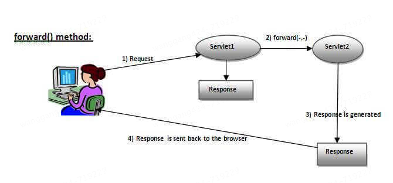
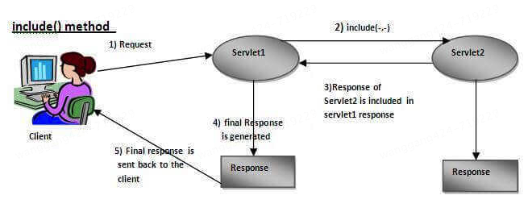
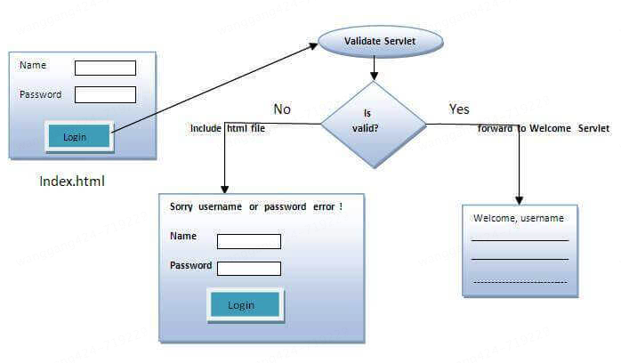
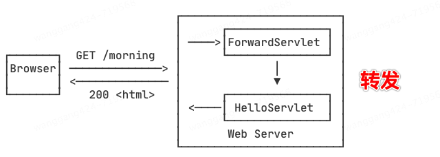
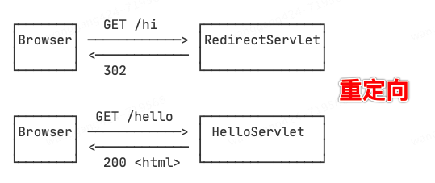

JavaWeb开发基础Servlet请求分发与重定向¶

请求分发¶
Servlet的RequestDispatcher接口定义：
package javax.servlet;
import java.io.IOException;
public interface RequestDispatcher {
String FORWARD_REQUEST_URI = "javax.servlet.forward.request_uri";
String FORWARD_CONTEXT_PATH = "javax.servlet.forward.context_path";
String FORWARD_PATH_INFO = "javax.servlet.forward.path_info";
String FORWARD_SERVLET_PATH = "javax.servlet.forward.servlet_path";
String FORWARD_QUERY_STRING = "javax.servlet.forward.query_string";
String INCLUDE_REQUEST_URI = "javax.servlet.include.request_uri";
String INCLUDE_CONTEXT_PATH = "javax.servlet.include.context_path";
String INCLUDE_PATH_INFO = "javax.servlet.include.path_info";
String INCLUDE_SERVLET_PATH = "javax.servlet.include.servlet_path";
String INCLUDE_QUERY_STRING = "javax.servlet.include.query_string";
String ERROR_EXCEPTION = "javax.servlet.error.exception";
String ERROR_EXCEPTION_TYPE = "javax.servlet.error.exception_type";
String ERROR_MESSAGE = "javax.servlet.error.message";
String ERROR_REQUEST_URI = "javax.servlet.error.request_uri";
String ERROR_SERVLET_NAME = "javax.servlet.error.servlet_name";
String ERROR_STATUS_CODE = "javax.servlet.error.status_code";
void forward(ServletRequest var1, ServletResponse var2) throws ServletException, IOException;
void include(ServletRequest var1, ServletResponse var2) throws ServletException, IOException;
}
它有2个方法，forward和include：
public void forward(ServletRequest request,ServletResponse response)throws ServletException,java.io.IOException: Forwards a request from a servlet to another resource (servlet, JSP file, or HTML file) on the server.
public void include(ServletRequest request,ServletResponse response)throws ServletException,java.io.IOException: Includes the content of a resource (servlet, JSP page, or HTML file) in the response.
forward方法将请求从一个Servlet转发到另一个资源（Servlet、JSP页面或HTML文件）。转发后，客户端的URL不会改变，且请求和响应对象在转发过程中保持不变。使用场景：
在服务器内部资源之间传递请求
需要在处理请求时共享相同的请求和响应对象

include方法将另一个资源的内容包含到当前响应中。与forward不同，include不会终止当前Servlet的执行，而是将目标资源的输出包含在当前响应中。使用场景：
在生成响应时需要包含其他资源的内容
需要在一个页面中动态地插入其他资源的内容

代码实践
通过登录页面，输入用户名和密码，如果密码是servlet，forward到welcome servlet，否则include到登录页面，展示错误信息。

login.html 获取用户输入
<form action="go" method="get">
Name:<input type="text" name="userName"/><br/>
Password:<input type="password" name="userPass"/><br/>
<input type="submit" value="login"/>
</form>
Simple.java Servlet类，如果密码是servlet，forward到welcome servlet
import javax.servlet.RequestDispatcher;
import javax.servlet.ServletException;
import javax.servlet.http.HttpServlet;
import javax.servlet.http.HttpServletRequest;
import javax.servlet.http.HttpServletResponse;
import java.io.IOException;
import java.io.PrintWriter;
public class Simple extends HttpServlet {
public void doGet(HttpServletRequest request, HttpServletResponse response)
throws ServletException, IOException {
response.setContentType("text/html");
PrintWriter out = response.getWriter();
String p = request.getParameter("userPass");
if (p.equals("servlet")) {
RequestDispatcher rd = request.getRequestDispatcher("welcome");
rd.forward(request, response);
} else {
out.print("Sorry username or password error!");
RequestDispatcher rd = request.getRequestDispatcher("login.html");
rd.include(request, response);
}
}
}
WelcomeServlet.java Servlet类，返回welcome信息
import javax.servlet.ServletException;
import javax.servlet.http.HttpServlet;
import javax.servlet.http.HttpServletRequest;
import javax.servlet.http.HttpServletResponse;
import java.io.IOException;
import java.io.PrintWriter;
public class WelcomeServlet extends HttpServlet {
public void doGet(HttpServletRequest request, HttpServletResponse response)
throws ServletException, IOException {
response.setContentType("text/html");
PrintWriter out = response.getWriter();
String n = request.getParameter("userName");
out.print("Welcome " + n);
}
}
web.xml 部署描述文件，servlet信息
<?xml version="1.0" encoding="UTF-8"?>
<web-app version="2.5"
xmlns="http://java.sun.com/xml/ns/javaee"
xmlns:xsi="http://www.w3.org/2001/XMLSchema-instance"
xsi:schemaLocation="http://java.sun.com/xml/ns/javaee
http://java.sun.com/xml/ns/javaee/web-app_2_5.xsd">
<servlet>
<description>This is the description of my J2EE component</description>
<display-name>This is the display name of my J2EE component</display-name>
<servlet-name>Simple</servlet-name>
<servlet-class>Simple</servlet-class>
</servlet>
<servlet>
<description>This is the description of my J2EE component</description>
<display-name>This is the display name of my J2EE component</display-name>
<servlet-name>WelcomeServlet</servlet-name>
<servlet-class>WelcomeServlet</servlet-class>
</servlet>
<servlet-mapping>
<servlet-name>Simple</servlet-name>
<url-pattern>/go</url-pattern>
</servlet-mapping>
<servlet-mapping>
<servlet-name>WelcomeServlet</servlet-name>
<url-pattern>/welcome</url-pattern>
</servlet-mapping>
<welcome-file-list>
<welcome-file>login.html</welcome-file>
</welcome-file-list>
</web-app>
web.xml在低版本Servlet是必须的，在高版本Servlet已经不再需要。
注意Simple.java的else逻辑：
out.print("Sorry username or password error!");
RequestDispatcher rd = request.getRequestDispatcher("login.html");
rd.include(request, response);
如果把这里的include改为forward，会发生什么？输出内容不会显示，因为forward方法会将控制权转交给login.html，并且login.html的内容将替代当前响应内容。
总结，用include方法时，当前Servlet的输出内容会保留，并且目标资源的内容会被包含在当前响应中。使用forward方法时，当前Servlet的执行将终止，控制权将交给目标资源，目标资源的内容将替代当前响应内容。
重定向¶
我们在浏览器看到的302，就是重定向。通常在重定向后，会自动发起新的HTTP请求。
HttpServletResponse接口的sendRedirect方法：
void sendRedirect(String var1) throws IOException;
示例：
import javax.servlet.ServletException;
import javax.servlet.http.HttpServlet;
import javax.servlet.http.HttpServletRequest;
import javax.servlet.http.HttpServletResponse;
import java.io.IOException;
public class MySearcher extends HttpServlet {
protected void doGet(HttpServletRequest request, HttpServletResponse response)
throws ServletException, IOException {
String name = request.getParameter("name");
response.sendRedirect("https://www.google.co.in/#q=" + name);
}
}
forward和sendRedirect的区别如下：


forward是在服务端，sendRedirect是在客户端
forward发送相同的request和response对象给另一个servlet，sendRedirect总是生成新的request和response对象
forward只能在服务器内部，sendRedirect可以跨不同Web应用或服务器
总结，forward适用于服务器内部资源之间的请求转发，效率较高，客户端URL不变。sendRedirect适用于通知客户端资源位置改变或跨Web应用/服务器的请求转发，客户端URL会改变，有额外的网络开销。